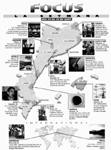
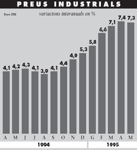
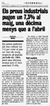

Comprendre esquemes gràfics


La finalitat d'aquesta unitat és practicar la comprensió de gràfics i esquemes, com unes formes especials que poden adoptar els textos informatius.
Cada vegada més, la informació ens arriba de manera visual, disposada en l'espai del paper (o de la pantalla) de tal manera que amb un cop d'ull podem copsar la globalitat de les dades que ens arriben. Així ens estalviem el procés seqüencial de llegir i podem captar més informació en més poc temps.
No obstant això, sovint el que trobem en textos informatius és una bona combinació entre gràfics, esquemes i text. La "bona combinació" ens ajuda a comprendre millor la informació perquè podem interrelacionar les dades que ens donen els gràfics amb el que se'ns descriu o explica en el text.
Per a analitzar i interpretar un gràfic o un esquema, cal fixar-se bé en tots els detalls, perquè en aquestes representacions visuals de la informació no hi sol haver detalls insignificants. Una fletxa, un color diferent, una proporció... poden ser indicadors d'informació rellevant.
 Exercicis
Exercicis
1) Relacioneu cada gràfic del temps de les pàgines següents amb el text corresponent i expliqueu per què.

2) Completeu els noms propis de l'explicació de l'itinerari següent, observant el mapa adjunt.
3) Observeu les activitats culturals que tenen lloc en una setmana del mes de juny. Contesteu les següents qüestions:
|
 |
|

- Quina activitat poden seguir aquests dies els habitants d'Andorra?
- Si visquéssiu a Tarragona i volguéssiu anar a veure alguna activitat propera, on aniríeu?
- On fan activitats musicals?
- Quines activitats s'anuncien de fora de l'àmbit lingüístic català?
- Què podríeu fer un dimecres de juny?
- On podríeu celebrar de manera tradicional Sant Joan?
- Si fóssiu economista, per quina activitat estaríeu interessat/da?
- Suposant que a l'estiu volguéssiu passar uns dies a l'Àfrica, quina activitat us podria convenir?
- Com és que pinten un mural a Ovidi Montllor a Alcoi?
- Quines d'aquestes activitats és previst que durin uns quants dies?
4) Observeu el quadre següent.
|
 |
|
Avui, 21.7.95 |
a) Sabríeu explicar-lo breument a una persona no entesa en economia?
Llegiu ara els titulars i el text que acompanyen el quadre:
|
 |
|
b) Creieu que es tracta d'un comentari del quadre o d'una ampliació de la informació? Expliqueu el perquè.
c) Heu detectat algun error en el text? Quin?
5) Resumiu el text següent en un esquema. Us en donem els punts que hauria de contenir:
|
Una de les obres més característiques de l'enginyeria romanava ser l'aqüeducte, troballa tècnica pròpiament romana, que va servir per a solucionar el problema de l'abastament d'aigua a les ciutats. La funció de l'aqüeducte era transportar l'agua des de les deus o embassaments, situats generalment en llocs més alts, fins a la ciutat, on es canalitzava i es distribuïa per mitjà de canonades de plom fins a les fonts. L'estructura de l'aqüeducte consistia en un canal, per on discorria l'aigua, elevat sobre uns pilars gruixuts, units entre ells mitjançant arcs. Algunes vegades, quan el terreny ho exigia, construïen diverses fileres de pilars i arcs superposats, la qual cosa produïa un perfil arquitectònic de gran bellesa. Atès que l'aigua havia de discórrer constantment, l'aqüeducte era contruït amb un lleuger pendent de principi a final. La solidesa d'aquesta construcció, de vegades molt extensa, requeria uns fonaments profunds, gruixuts i ben calçats a terra. La utilització de l'arc i la volta com a solucions arquitectòniques apareix també en una altra classe d'obra d'enginyeria: els ponts. Aquests elements arquitectònics, als quals els romans van ser molt afeccionats, els van permetre de salvar llargues distàncies unint els extrems oposats de les valls i de les vores dels rius. En realitat, ponts i aqüeductes plantejaven el mateix problema: construir arcs de pedra estables i resistents. També es podien trobar importants obres d'enginyeria en el subsòl de les ciutats romanes. Per exemple, les clavegueres, que recollien les aigües residuals abocades pel clavegueram de la ciutat. Eren túnels subterranis amb prou amplada i alçada perquè una persona hi pogués caminar dreta per l'interior. Les clavegueres desembocaven al riu més proper i a l'extrem final s'hi col·locava una reixa per impedir l'accés a la ciutat. | |
Títol:
1.
1.1.
1.2.
1.3.
2.
2.1.
2.2.
3.
3.1.
3.2.